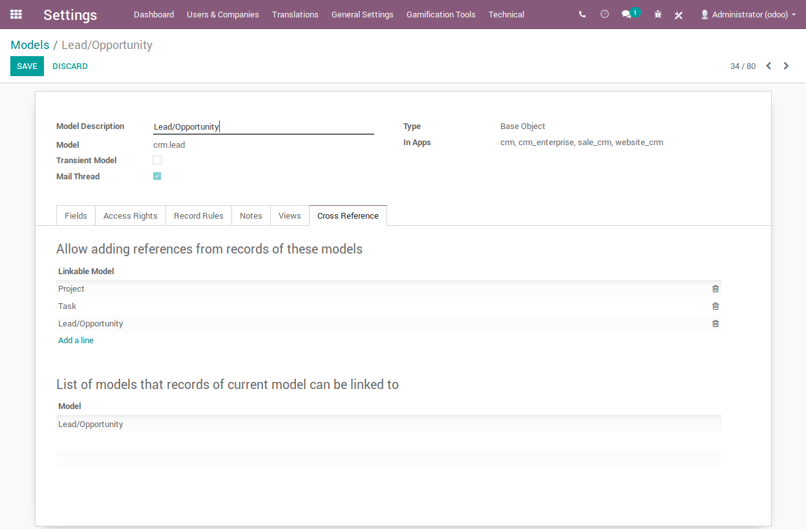

Usage
Enable crosslink for the selected models

Enable Developer Mode got to settings then Technical menu and select Models under Database Structure. Then select themodel you want to accept cross-references.
Select the models which are allowed to add links from their records to current model. Inthe seccond list you can view the list of models that records from current model are allowed to be linked to, this is read-only.
Add crosslinks in open-chatter
In any model with open chatter and cross-referncable to at least one model (above sectoin) you can start adding cross references by clicking the link icon in open-chatter:

You can see, open and add cross references.